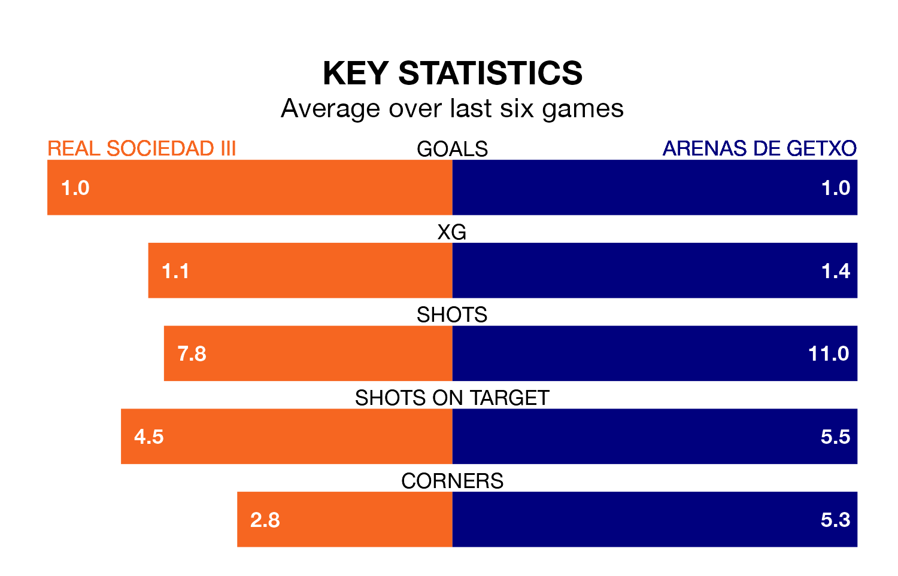

Arenas de Getxo travel to Real Sociedad III on Sunday in the Segunda División RFEF Group 2.
The visitors come into the game on the back of a win in their last match, having beaten Náxara CD 4-0 at home, with goals from Daiki Niwa, Alexander Valiño Navasal, Álvaro García Arana and Jon Trincado Velasco.
Sociedad III, meanwhile, drew their last match, 2-2 against AD San Juan, with their goals scored by Mario Adot Villanueva and Pablo Arenzana Minguez.
With 18 goals in 22 games so far this season, Arenas de Getxo are scoring at below the league average rate with 0.8 goals per game. And they are conceding at an average rate, letting in 25 goals at a rate of 1.1 per game.
Sociedad III, meanwhile, are average scorers, with 1.1 goals per game. They have conceded 0.9 goals per game.
The visitors are 13th in the table after 22 games, of which they have won four and drawn nine, earning 21 points.
The home team are six places ahead of Arenas de Getxo in seventh, with nine wins and six draws putting them on 33 points.
Sociedad III are in mixed form in the Segunda División RFEF Group 2, with one win and four draws from their last six games.
With a win and three draws over that period, Arenas de Getxo's form is slightly worse – they have taken six points from 18, compared to Sociedad III's seven.
In the last five years, Sociedad III and Arenas de Getxo have played each other on five occasions. Sociedad III won two of them, Arenas de Getxo one, and they drew twice.
On average, Sociedad III scored 0.8 goals and Arenas de Getxo 0.4 in those matches.
Their last meeting was on October 7, when Sociedad III won 2-0 away.
Updated: 12:06 (UTC), 15/02/24